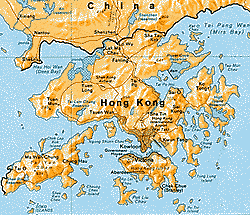
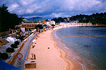
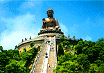

|
Written by
Al Wong
It seems everyone who knows I went to Hong Kong (HK) for vacation wants to
hear about it. So I've decided to make a web page about my experience
over there and then I can share it forever! I have even included some
pictures on this web page too! These few pictures do not begin to
describe the exotic sights of HK. They merely hint at them.
Some Background
The last time I was in HK was 1990 and I had planned to go back each
successive year but these plans fell through for one reason or another.
This year (1996) I was determined to go. The added incentive is that
HK will repatriate with China in 1997 and I wanted to see HK
before it turned communist.
My vacation in HK lasted two weeks. Barely enough time really.
I like to stay at least two weeks in a foreign country to get a feel
of the rhythm of life. A shorter time and your trip is just a flurry
of places. I also try to stay longer to justify the long flight here
which was nearly 16 hours! If you count getting to the airport,
luggage checkin and retrieval, HK immigration, airport to hotel, etcetera,
you are actually on the road
for about 20 hours!
This trip was much more relaxed than my previous trips. I was not
scurrying around trying to see everything. I had already done this
in my previous HK trips. I also was not a souvenir banshee either.
I had bought enough souvenirs before. No, this trip was to renew
old acquaintances and meet new friends. And I pretty much did all
the things I set out to do. Regarding the picture on the left, I caught an
old friend snoozing on a ferry ride
(143K GIF).
She is very photogenic.
And people wonder why I go to HK.
Life is rough when you're traveling.
:)
For those of you who have not been here,
Hong Kong is really made up of 3 main parts:
- Hong Kong Island. Yes, HK is an island!
- Kowloon, the peninsula nearest to and pointing to HK island.
- New Territories, the land extending beyond Kowloon to the China border.
Below is a small map of Hong Kong which links
to a
much bigger map (181K GIF)
which shows more detail.

See bigger map (181K GIF)
(Derived from public domain map of Hong Kong
from the
Perry-Castaneda Library Map Collection,
at the University of Texas at Austin)
From Los Angeles (LA), the direct flight to HK is about 15.5 hours. However,
the flight back from HK to LA is about 12.5 hours due to tail winds.
I flew with Cathay Pacific.
They were the first to offer direct flights
from LA to HK. I was not impressed with their service however. I asked
4 different stewardesses for water and waited over 10 minutes before
I finally received it. Also, the flight to HK was the most turbulent
I have ever been on. I usually get about 5-6 hours of semi-sleep on
trans-ocean flights. This time, I couldn't sleep at all because of the
turbulence.
There are two modes of weather in Hong Kong:
- Rainy and humid
- Hot and humid
The humidity is near 100%. Half the time it rains and the other half
it gets very hot. In fact, if HK did not attract so much
international business,
I don't think people would be living there.
The humidity is good for the skin though.
Where I Stayed
I stayed for most of the trip on Cheung Chau Island. It is one of the
outer islands. I really had little choice of where to stay because
the hotels in HK and Kowloon were booked up. Seems HK is attracting
a lot of foreign business.
Anyway, staying on Cheung Chau changed my perspective
about HK giving me a more relaxed view.
There's only one hotel on Cheung Chau and I stayed there.
The Warwick Hotel is on the beach and is a smaller hotel although
very nice. The staff is very efficient and engaging. The
hotel caters mostly to the local HK people on holiday so there were
very few foreigners (like me!) here. I really enjoyed my stay at
this hotel.
The advantage of staying on Cheung Chau is you are away from the
bustle of HK. The crowds, the traffic, the noise, the construction,
etc. are irrelevant. The island life is more relaxed and is very safe.
One doesn't have to worry about getting robbed or inadvertently
walk into a bad section of town.
Also, there are several seaside restaurants
on the island
which serve a variety of local dishes. Of course, fresh seafood
is the main staple here and I ate a lot of it! Yummy.
The only disadvantage about staying at Cheung Chau is the
hour long ferry ride to HK. There's a ferry that leaves about
every hour to HK Island and the trip takes about an hour, one way.
An interesting local hangout is the
Coffee or Tea Restaurant
which has tables outside in an open public square.
I call this place the Deadman's Restaurant much to the amusement of my
HK friends. The reason for this name is because the outside tables
face a mortuary(!) And funeral services occur quite frequently
outside in the public square. I thought this was very unusual. It was
my understanding Chinese people do not wish to be associated with
death and it is considered to be a bad omen. (Where I live in LA, you could
not sell property to Chinese if the property faces a cemetery or
is even close to a cemetery.) I, myself, was witness to at least
4 public funeral services while eating at this restaurant.
The local Chinese who patronize Deadman's Restaurant think nothing
wrong about eating here
with funeral services going on less than 50 yards away!
The funeral services are not discreet either.
We're talking the banging of bells/cymbals, flute playing, incense burning,
minor parades and perhaps a bonfire!
By the way, in a HK funeral, the mourners dress in white, not black.
The coffin shape is very distinct too. And no, I didn't take any pictures.
I consider that bad etiquette.
By the way, I do recommend this
Coffee or Tea Restaurant (which I call Deadman's Restaurant)
if you find yourself on Cheung Chau Island.
The food is very good and they give good value. I have also found the people
who work at this restaurant to be very honest.
Such virtues should be mentioned here and can only lead to a successful
business.

I have included a few
pictures around the island. In the left picture, I like the
boat scene just off the pier
(102K JPG).
The funny thing is, at the time, my HK friends were puzzled
why I would take such a mundane picture of their pier.
They didn't think it would be a good picture.
I guess they don't see what I see!
The picture on the right is
the view from my hotel
(78K JPG).
The Highlights
- One thing that stood out in my mind that was significant for HK
was the construction of museums especially the
HK Museum of History.
Why significant? Because life in HK (as I remember it before),
did not leave room for historical memory.
The people are constantly seeking profits
in business and life moves pretty fast around here.
Lots of construction
going on continuously with buildings going up or coming down
on limited land area.
I also seem to remember language dialects of the outer islands
dying out. Forever lost because nobody cared.
It seems someone in HK wants to preserve
its history otherwise communist China may rewrite it.
There is an organization called
the Urban Council which is behind the creation of these museums.
There are at least
four new museums in HK since I last visited. They have done a very
good job too. I visited the HK Space Museum and the
HK Museum of History
and was impressed with both places. I wanted to visit the
HK Museum of Science
but I just didn't have the time!
- HK is a shopping mecca, especially for women's clothes. If you're shopping
for clothes, $1K US will buy at least $3K-$5K US worth
of clothes in HK.
The US dollar has tremendous buying power in HK.
Price and quality vary greatly so one needs to shop around.
I also noticed more street vendors selling generic souvenirs.
What I mean by generic are pens, watches, t-shirts, etc.
All the crap one
can find in any tourist spot. On my last trips to HK, they used to
sell more stuff that was local to the city or to the Chinese culture.
I also noticed the prices have increased by about 50% since 1990.
What I would get as souvenirs. Anything in silk, cotton, jade, teakwood,
sandalwood and amber. Wool items are good too but you need to shop around.
I tend to lean toward handmade items.
- HK also is one of the first to receive the latest computer gadgets
from Taiwan and Japan. A major center for computer stuff is
the Golden Shopping Centre very near the Sham Shui Po
MTR/subway exit. I saw Iomega JAZ drives selling for $100 US
less than in the USA. (I tried to get one but they were out of stock.)
More stores are concentrating on selling CD-ROMS and video
game paraphenalia though. I guess these are more profitable.
- HK is also known for its good food. Meals can be had for a few
dollars (US) to several hundred dollars. Dim Sum is better here
than in LA. Of course, the seafood here is second to none.
Contact me directly if you want a list of recommended
restaurants.
- HK has one of the most efficient public transportation systems in the world.
In one day, you could travel by hover-ferry,
MTR (HK's subway), tram and
bus just to get to one place.
The MTR is the travel mode of first choice.
Fast, efficient, clean and inexpensive.
HK's subways do not have a graffiti problem which plagues most cities.
I think it's because the population is more homogeneous (95% Chinese,
5% British). The work ethic is firmly ingrained in the culture too.
Taxis are available and fairly cheap but they
cannot stop just anywhere.
Traveling by ferry is very cool. The HK ferry system is over 100 years old
and has an interesting history.
Even with all this public transportation,
be prepared to do a lot of walking.
- I discovered a large insect while staying on Cheung Chau.
It's like a cricket but on steroids. You can also compare it to a cicada.
It looks like a large black beetle
about the size of a small sparrow (I was told insects cannot get much
bigger than that due to their respiratory system) and it has large
transparent wings. The mating call of
this insect sounds like some major construction going on. Very loud and
sounds very artificial but it's all organic and natural.
Very curious. These insects swarm by the hundreds in the local trees.
Fortunately, this insect doesn't bite.
-

The Po Lin Monastery on Lantau Island is a popular local attraction.
A giant Buddha
(93K JPG),
which was just completed, sits near the monastery.
(It was still under construction back in 1989!) They did a pretty good
job too.
If you don't like climbing stairs to see the giant Buddha, you can
wander around the monastery and see the many different shrines
and turtle ponds.
- For those of you from the USA,
there is a Hard Rock Cafe (Actually two
of them) in HK. Also, a Planet Hollywood just opened there.
- You haven't lived until you've seen Pinky and the Brain
in Cantonese.
Random Travel Tips
- It's a good idea to dress warmly and bring munchies for the
air flights. They really crank up the air conditioning during
the flights. Why they do this, I have no clue. To make us sleep?
To keep us awake? To make us frozen?
The other problem with long flights is they don't feed you enough.
At least half the food served is inedible. It's better to bring your
own munchies. On my next trans-ocean flight, I'm even going to bring something
to drink! They really don't give you enough to drink too!
- Bring good walking shoes.
Unless you hire a car or take taxis during your entire trip in HK,
you will be walking, walking, walking. If you don't do a lot of walking
during your everyday life, you should train your legs before you leave
for HK. I'm serious. Otherwise your feet/knees will hurt and you will
end up spending time trying to recuperate when you should be walking
around seeing/doing things.
- If you like to shop for clothes, bring an empty travel bag.
Most airlines to HK allows one carry-on bag and two checkin bags.
I decided to travel light in 1990. I have soft luggage.
I brought only two changes of clothes
which was in my carry-on bag and I brought two empty bags.
I had no trouble filling those empty bags with clothes and other
souvenirs! The clothes were of high quality cotton and wool and
were very inexpensive.
Of course, on my return flight I checked in those
two filled bags!
- Tourist information can be readily found at the
Hong Kong Tourist Association (HKTA) offices.
They are located in the main tourist paths. The most convenient
one is located near the Star Ferry terminal in Kowloon.
They have tourist books, magazines and pamphlets on just about
everything in HK. And the information is mostly free.
Don't depend on the local HK people to tell you what to do.
I have found most local people really don't know much about
what HK has to offer.
- Get a good street map of Hong Kong.
Some of the tourist books show sections of HK but you really want
a big map which shows everything. You want all the street names,
landmarks, MTR routes, ferry routes, etc.
The more detailed, the better. Any decent bookstore should
have these maps. It will take a little time to find a good map
but it's worth it. Believe me.
- Get familiar with the MTR.
The MTR is HK's subway and is the most efficient way
to get around. Get a map of the MTR line routes too.
Get an MTR pass of at least $100 HK value.
They sell a tourist pass for $30 HK which does not get you
very far at all. You are much better off buying a $100 HK MTR pass.
- Try to arrive in HK on a day other than Sunday.
All the banks are closed on Sunday which means you cannot
exchange your money for HK cash. Most businesses are also closed
on Sunday and those that are open will not accept
foreign currency. In fact, some businesses will not take
credit cards so ask first!
(They might take gold but I've never tried it.)
Also, all travel agents are closed on Sunday which makes it
hard to book a hotel room.
- Better yet, exchange money for HK cash before you leave.
This can be a hassle though.
- Always book a hotel room through a
Hong Kong travel agent.
They know the best discounted rates for each hotel. Never book
a room with the hotel directly. They will certainly give you the
rack rate with no discount.
Note you need to deal with a Hong Kong travel agent.
I have found US travel agents are not familiar with the
discounted rates and will quote near rack rates for hotel rooms.
- To get telephone information in English, dial 1081.
- If you have a free day, go over to Macau. Macau is a
Portugese colony (like HK is a British colony) and the only
way to get there is by JetFoil from HK. The ride is about 45 minutes long
and is an experience in itself.
It's interesting to compare the two colonies/cities.
Also in Macau, gambling is legal and there are 4-5 casinos.
I didn't care for the casinos myself. Las Vegas casinos easily
beats them. I believe Macau will repatriate with China in 1999.
I caught a little sore throat while in HK and was fine while
I was there. This sore throat flared up to flu-like symptoms
during the return flight home to LA.
I was deathly ill for two weeks and am still not 100% myself now.
I blame the Cathay Pacific flight home for this.
They don't give you enough to eat or drink. They crank up the
air conditioner so you are constantly cold. You really cannot
sleep during the flight. I was also told they do not filter the
cabin air properly.
That's my HK trip in a nutshell! I could go on about HK but I want
to get this on the web now.
I also need to update
my other web pages too.
|